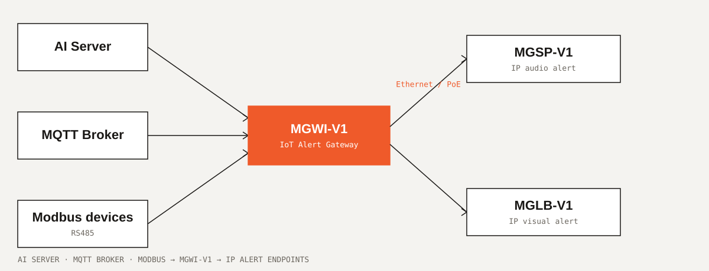
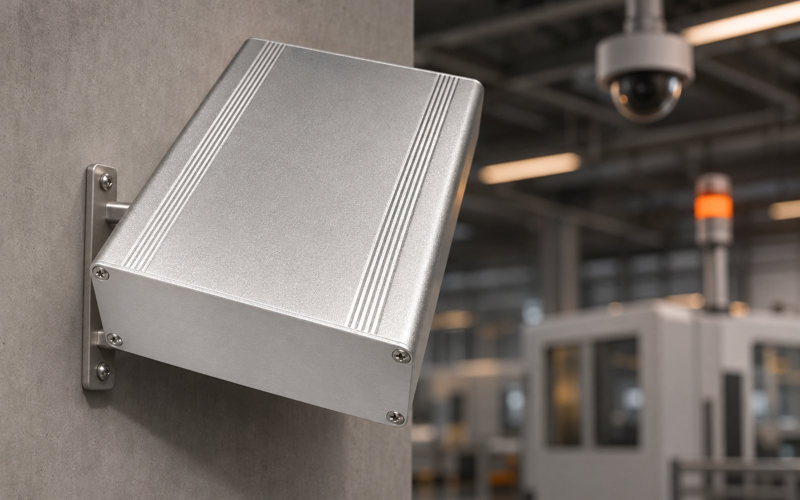
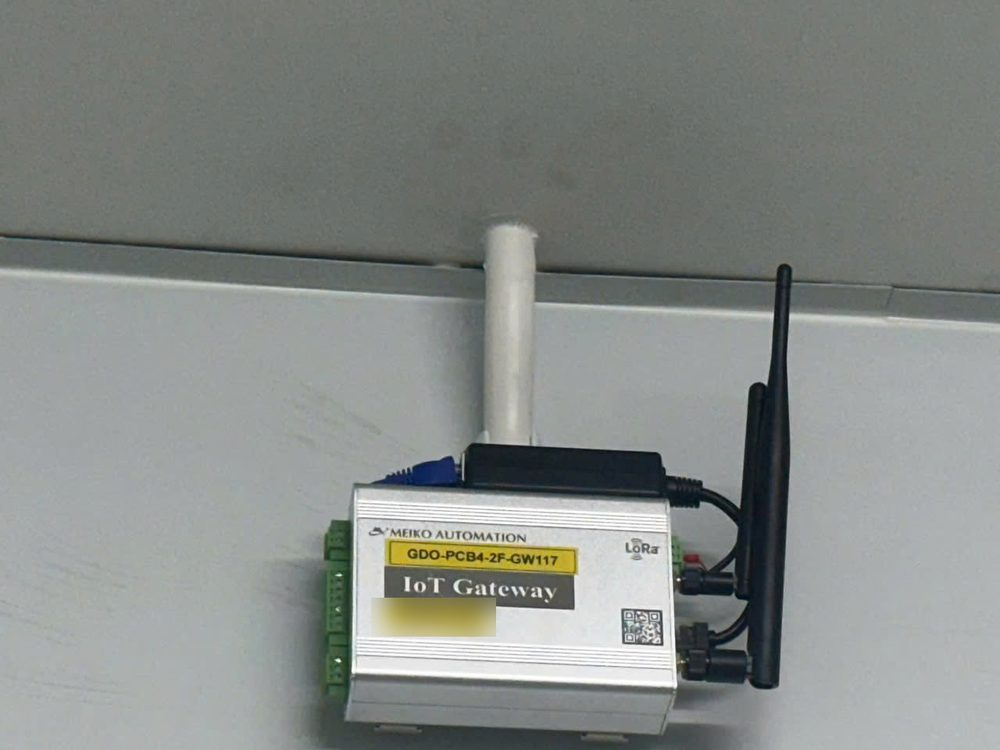
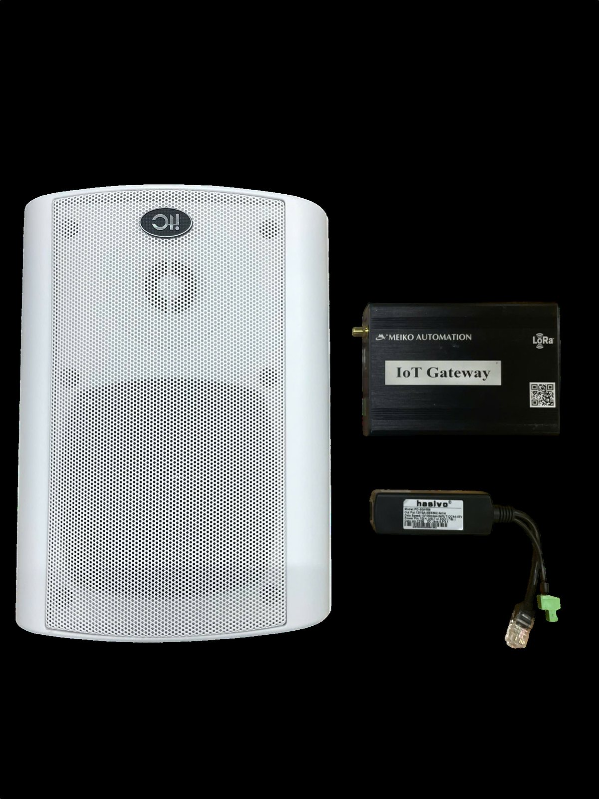

Vỏ nhôm, đầu nối ở cạnh.
Hàng terminal xanh nằm dọc cạnh vỏ, dành cho cấp nguồn và đấu nối hiện trường.

MGWI-V1 là gateway cảnh báo IoT cho nền tảng cảnh báo công nghiệp. Tài liệu mô tả các kết nối Ethernet, WiFi và RS485 Modbus, cùng nguồn PoE/12V và quản lý thiết bị.
Nội dung tạm: thông tin sản phẩm đang được hoàn thiện và cần xác nhận cùng đội kỹ thuật.
Số liệu theo Technical_Spec.pdf, chưa xác nhận công bố chính thức.
Kết nối Ethernet RJ45, WiFi và Modbus RS485 cho thiết bị hiện trường.
Kết nối máy chủ AI, MQTT broker, thiết bị Modbus và các đầu cuối cảnh báo IP.
Nguồn PoE 802.3af/at và nguồn dự phòng 12V được nêu trong tài liệu.
Tài liệu nêu ngưỡng bảo vệ cao áp 27 V, thấp áp 7 V, quá tải 3,8 A và chống ngược áp.

Cuộn để xem từng lớp của sản phẩm. Mỗi ảnh được gắn nhãn loại: render 3D, ảnh mẫu hoặc sơ đồ.
Hàng terminal xanh nằm dọc cạnh vỏ, dành cho cấp nguồn và đấu nối hiện trường.
Cổng RJ45 và hai đầu nối anten ở một đầu vỏ. Tài liệu nêu Ethernet và WiFi.
Nguồn PoE 802.3af/at, kèm nguồn dự phòng 12 V theo tài liệu.
Render thiết kế bo mạch, không phải ảnh chụp sản phẩm.
Thông số dự kiến — cần xác nhận.


Thông số được trích từ tài liệu kỹ thuật của Meiko. Dòng ghi "dự kiến" cần được xác nhận cùng đội kỹ thuật cho cấu hình cụ thể.
| Loại thiết bị | IoT Alert Gateway | Thông số dự kiến — cần xác nhận |
|---|---|---|
| Nguồn cấp | PoE 802.3af/at + 12V dự phòng | Thông số dự kiến — cần xác nhận |
| Công suất tiêu thụ | 25 W | Thông số dự kiến — cần xác nhận |
| Mạng | Ethernet RJ45 + WiFi | Thông số dự kiến — cần xác nhận |
| Giao tiếp công nghiệp | Modbus RS485 | Thông số dự kiến — cần xác nhận |
| Bảo vệ cao áp | 27 V | Thông số dự kiến — cần xác nhận |
| Bảo vệ thấp áp | 7 V | Thông số dự kiến — cần xác nhận |
| Bảo vệ quá tải | 3.8 A | Thông số dự kiến — cần xác nhận |
| Kích thước | 120 × 88 × 38 mm | Thông số dự kiến — cần xác nhận |
Mô tả theo catalogue hệ thống Meiko; cấu hình cụ thể cần xác nhận.
Các tài liệu này là bản nháp nội bộ, chưa phát hành nên chưa có liên kết tải.
Ethernet RJ45, WiFi và Modbus RS485, theo Technical_Spec.pdf.
PoE 802.3af/at, có nguồn dự phòng 12 V; công suất tiêu thụ 25 W theo tài liệu.
Cao áp 27 V, thấp áp 7 V, quá tải 3,8 A và chống ngược áp.



Cần cấu hình cho dự án của bạn? Trao đổi với đội kỹ thuật Meiko.
Yêu cầu tư vấn / báo giá